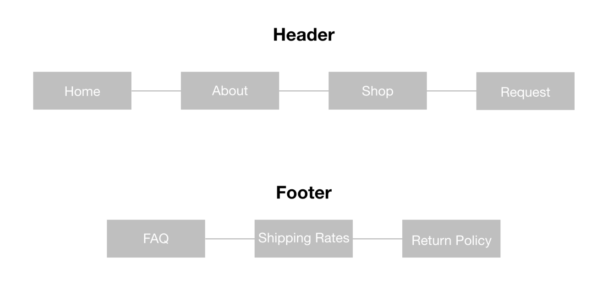
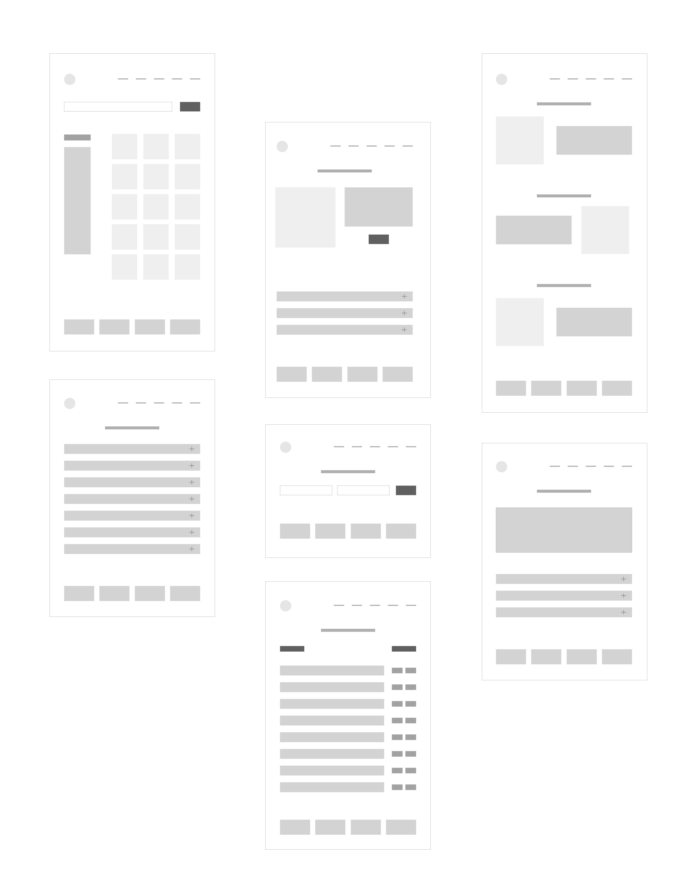
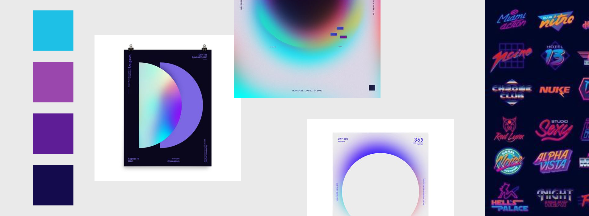
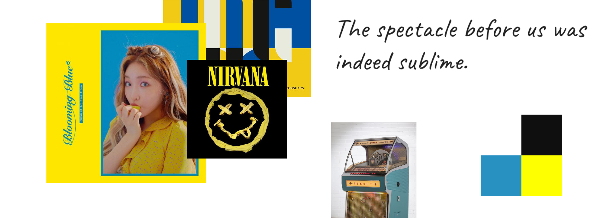
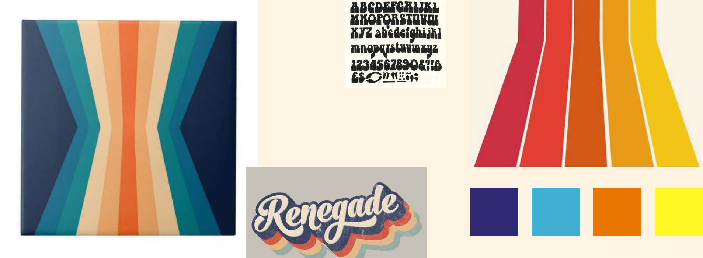
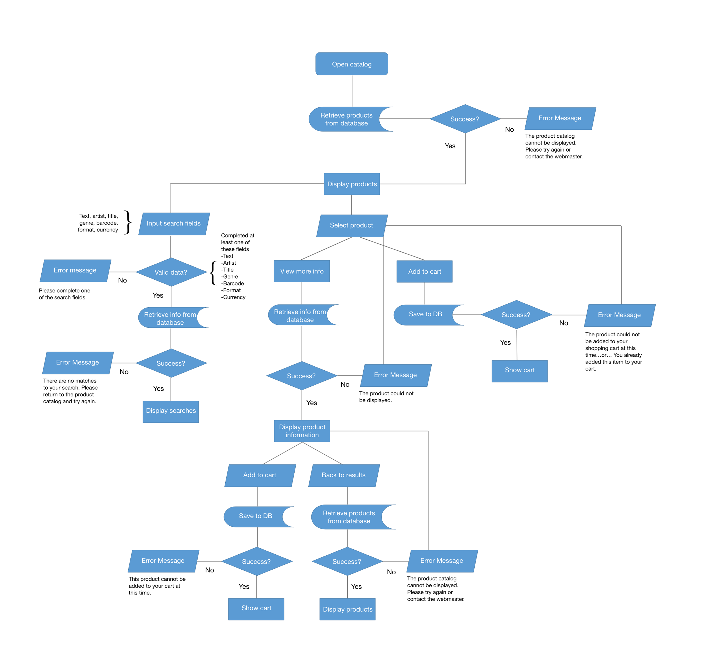
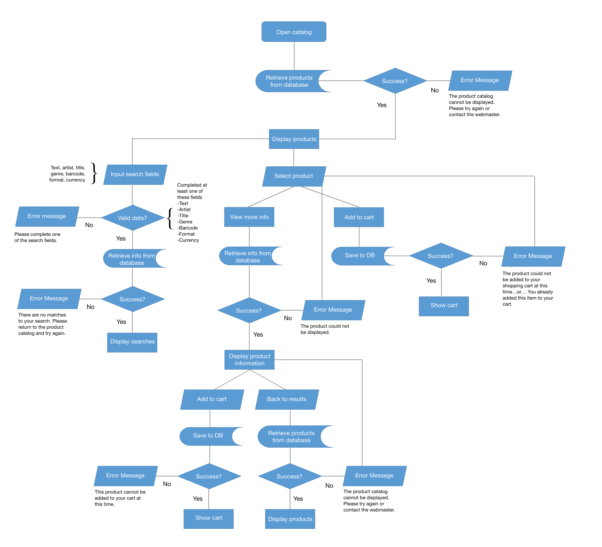
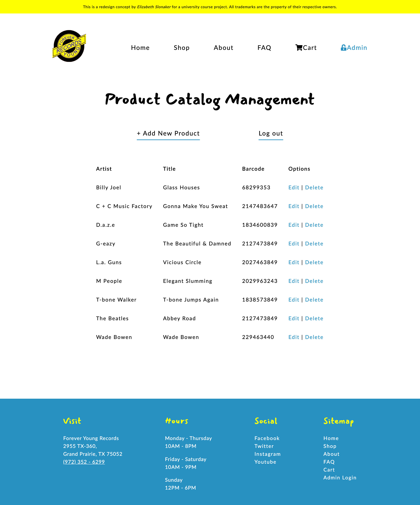

Forever Young Records
How redesigning the website of a family-owned & operated record store furthers the conversion from in-store to online sales
Overview
Forever Young Records is a family owned and operated record store. As one of the few independent record stores left in the DFW metroplex, their mission is to offer a large selection of high quality music at reasonable costs. They sell over 250,000 items from new releases to classics, in various genres and formats.
*This is a website redesign concept for a course project.
Scope
- Market Research
- User Personas & User Flows
- Sitemap & Wireframes
- Visual Design
- Functional Requirements & Specs
- Usability Assessment
- Front-End Development
- MySQL Database
- Content Management System
Objectives
- Improve the usability of the online shopping experience
- Implement Content Management System to manage inventory
Results
- Functional search bar
- Filtering products
- Admin login system
- Product catalog management (CMS)
Challenges
Forever Young Records is in a transition phase. Their online store has greatly widened their clientele and online presence, in comparison to their previous local reach in the DFW community. Therefore, they are well positioned to grow online revenues.
I identified the following usability issues with the current site. These issues led me to identify areas of opportunity within the shopping experience, to improve usability and user flow.
- The Homepage
Products aren’t listed. This makes it hard for customers to quickly browse, especially when they don’t know what they’re looking for. This increases the bounce rate.
- The Search Bar
Imagine this - You recently purchased a record player and you need to buy some vinyl. You want to see all available vinyl, regardless of artist. However, the site requires that you type in an artist or title first, the opposite of your goal. You leave the site.
This scenario highlights a key issue with the current search feature. The search bar requires a user to search for a keyword, before filtering the results by genre, format, etc.
- The Product Page
The product page is missing a product image. This is an important factor in a customer’s decision to purchase. Customers want to see what they’re buying.
There is too much information for the viewer to digest, making the visual hierarchy unclear. Notably, the “Add to Cart” button isn’t styled and hard to locate.
Target Audience
The target audience is men and women between the ages of 24 - 60.
User Personas
The Millennial *
- Tech-savy
- Most likely to convert to online shopping
- Site Goal: Find recently released and classic records at affordable prices
- Site Needs: Modern, online shopping experience
*According to Fortune Magazine, 50% of vinyl buyers are 18-34 years old
The Old Soul
- Independent, knowledgeable, introspective, and nostalgic
- Enjoys tangible items
- More likely to visit the store than shop online
The Collector
- Patient, resourceful, and diligent
- Site Goal: Find specific items, often rare or limited edition products, in good to mint condition
- Site Needs: Highly detailed search filters
Sitemap
Wireframes
Low-fidelity

Visual Design
Stylescapes
Originally inspired by designs from the 70s and 80s, I decided to avoid over representing a single decade or design trend. Instead, I selected a bright dual color palette inspired by their current blue and yellow logo. A “handwritten” font for the headings gives the design a personal and nostalgic feeling, which reflects the customer’s attitude towards the brand.
1. La la land
2. Fresh & Funky
3. 70s Retro
Functional Requirements
Feature #3: Product Catalog
| # | Need | Title | Description |
|---|---|---|---|
| 1.1 | Help customers find products | Search | The website shall allow customers to search the catalogue and query the database with multiple requests. |
| 2.1 | Increase customer awareness of new products | Browse | The website shall allow customers to easily browse new products. |
| 3.1 | Add, edit, and delete products | CMS | The website shall allow the client to upload new products and edit or delete existing ones. |
| 4.1 | Increase online sales | Shopping Cart | The website shall allow customers to add products to a shopping cart. |
| Field | Example |
|---|---|
| Use Case Name | User Search of Product Catalogue |
| Use Case Specifier | Elizabeth Slonaker, Web Designer and Developer |
| Version History | Version 001 10/4/19 |
| Summary | This Use Case describes the process by which a user searches for a desired product from the catalogue, either through a typed input field or selecting options from a category. |
| Trigger | The user desires to find the items that they are looking to purchase. |
| Outline of Events | 1. The Use Case begins when the user enters the website and clicks on the product catalogue. 2. The system responds by delivering the user the catalogue from a database. 3. The user inputs data into a search field(s). 4. The system responds by querying the database and displaying the results. 5. The user proceeds to click and view the delivered products. |
| Alternative Paths | In step 3, if the item that a user has searched is sold out, a message will convey this information to the user, and the user will be given the option to view similar products or perform another search. |
| Exception Paths | In step 3, if the user performs a search that yields zero results, the system will notify the user that there are no search results and that the user needs to modify their search. |
| Extension Paths | 1. The product catalogue is accessible to the user. 2. The system has access to the current product list. |
| Assumptions | The user knows the product they are looking for, or at least has a search parameter in mind. |
| Preconditions | The product catalogue is updated. |
| Post Conditions | The user finds the item they are looking for. |
| Business Rule | 1. Products that are sold out or unavailable will not be listed in the product results. 2. If a product is marked down, this discount will be reflected in the price. |
Mapping Client Flow
Feature #3: Product Catalog
The client will be able to add new products and edit and delete existing products. The following user flow maps the client's journey from opening the product catalog, to displaying all the items stored in the database.
{kind=link}
Mapping Customer Flow
Feature #3: Product Catalog
The customer will be able to browse and search the catalog. The following user flow maps the customer's journey from opening the catalog, to displaying a selected item.
{kind=link}
Developing 3 Features
Search Bar, Filters, Content Management System
1. Functional Search Bar
Step 1
User searches for an Artist, Title, or Barcode
Step 2
Matching products are retrieved from SQL database
Step 3
Displays product(s)
OBJECTIVE #1: Improve usability of the online shopping experience
The newly developed search bar improves the shopping experience by allowing the user to independently search for items, without having to select a specific filter or category first. In the visual hierarchy, the search bar is top and center, meant to encourage site visitors to use it. The home page displays products upon page load, making quick browsing much easier than before.

2. Highly Customized Filters
Step 1
Users filter products by Genre, Format, or Quality. These filters can be combined.
Step 2
Matching products are retrieved from SQL database
Step 3
Displays product(s)
OBJECTIVE #1: Improve usability of the online shopping experience

3. Managing the Product Catalog
Step 1
Admin logs into the Product Management System
Step 2
Admin can manage the entire catalog: add new products, edit products, delete products
OBJECTIVE #2: Implement Content Management System to manage inventory

Usability Assessment
Two weeks before the completion of the redesign concept, I conducted an assessment to test the usability of the search bar and product catalog management.
Questions Addressed by Assessment
- Will the users easily find the search bar in its present location?
- Can users easily navigate to the login admin page?
- Will the users easily find the button to upload an image, and know how to navigate back to the product catalog?
I gave the following two scenarios and tasks to the users to perform. The hesitation time for each task, the amount of incorrect searches, incorrect clicks, and approximate time it took to complete each task was recorded.
Scenario 1
- Search for “The Beatles” in the search bar.
- Go to the admin login page and enter the following credentials into the form.
- Locate the Beatles item from the list and navigate to the edit page. Change the price of the item to .99 cents and submit the new product details.
- Do not log out! Please proceed to scenario 2.
Scenario 2
- Choose any product and proceed to the edit form.
- Upload a new image of your choice to be the product image.
- Return to the complete list of products.
Issues Observed
- Search for “beatles” did not come up
- Delayed response when trying to locate the admin login
- Confused on how to return to product listing page after editing a product
- Confused on how to return to product listing page after uploading an image
Analysis
The admin login link was moved from the top right corner, to the primary navigation. It was too small for the users to find with hesitation. A lock icon was added to differentiate this link from the rest of the main links.
The search bar parameters were changed to accept searches with keywords like a product’s title, artist, or barcode. Now, individual searches for “Beatles” or “The Beatles” will yield the same results.
A direct link to the product listing was added to the success message after the user edits a product or uploads a product image.
Results
